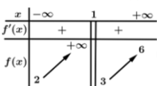
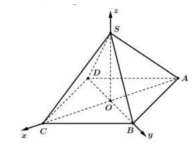
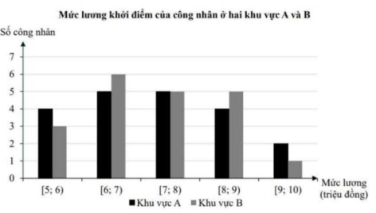
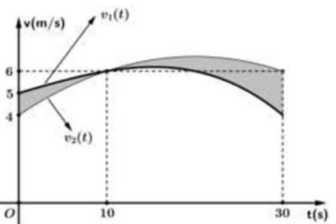
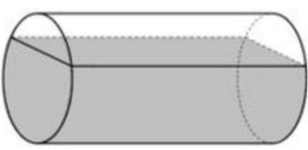

Giá trị cực đại và cực tiểu của hàm số được xác định từ bảng biến thiên, tại điểm mà đạo hàm đổi dấu từ dương sang âm (cực đại) hoặc từ âm sang dương (cực tiểu).
Cho hàm số \( y = f(x) \) có bảng biến thiên như hình vẽ dưới đây
| \( x \) | \( -\infty \) | -1 | 0 | 1 | \( +\infty \) |
|---|---|---|---|---|---|
| \( f'(x) \) | - | 0+ | 0 | 0 | + |
| \( f(x) \) | -4 | -3 | -4 |
Chọn đáp án:
Lời giải:
Dựa vào bảng biến thiên, tại \( x = 0 \), \( f'(x) \) đổi dấu từ dương sang âm, nên \( f(x) \) đạt cực đại tại \( x = 0 \) với giá trị \( f(0) = -3 \). Tại \( x = \pm 1 \), \( f'(x) \) đổi dấu từ âm sang dương, nên \( f(x) \) đạt cực tiểu với giá trị \( f(\pm 1) = -4 \). Không có thông tin về \( x = -3 \) hoặc \( x = -4 \).
Đáp án: D.
Phương trình mũ dạng \( a^{f(x)} = a^{g(x)} \) có nghiệm khi \( f(x) = g(x) \), với \( a > 0 \) và \( a \neq 1 \).
Nghiệm của phương trình \( 2^{2x-1} = 2^x \) là
Chọn đáp án:
Lời giải:
Ta có: \( 2^{2x-1} = 2^x \Leftrightarrow 2x - 1 = x \Leftrightarrow x = 1 \).
Đáp án: C.
Công thức số hạng tổng quát của cấp số cộng: \( u_n = u_1 + (n-1)d \), trong đó \( d \) là công sai.
Cho cấp số cộng \( (u_n) \) có số hạng đầu \( u_1 = 3 \), công sai \( d = -2 \). Số hạng \( u_3 \) của cấp số cộng đã cho bằng
Chọn đáp án:
Lời giải:
Ta có: \( u_3 = u_1 + 2d = 3 + 2 \cdot (-2) = -1 \).
Đáp án: C.
Nguyên hàm của \( x^n \) là \( \frac{x^{n+1}}{n+1} + C \). Đối với đa thức, tính nguyên hàm từng hạng tử.
Họ nguyên hàm của hàm số \( f(x) = x^3 + 3x^2 \) là
Chọn đáp án:
Lời giải:
Ta có: \( \int (x^3 + 3x^2) \, dx = \int x^3 \, dx + 3 \int x^2 \, dx = \frac{x^4}{4} + x^3 + C \).
Đáp án: C.
Điểm \( M(x_0; y_0; z_0) \) thuộc đường thẳng \( \frac{x-a}{m} = \frac{y-b}{n} = \frac{z-c}{p} \) nếu thỏa mãn \( \frac{x_0-a}{m} = \frac{y_0-b}{n} = \frac{z_0-c}{p} \).
Trong không gian \( Oxyz \), cho đường thẳng \( d: \frac{x-3}{2} = \frac{y+1}{4} = \frac{z+2}{-1} \). Điểm nào dưới đây thuộc \( d \)?
Chọn đáp án:
Lời giải:
Kiểm tra điểm \( N(3; -1; -2) \): \( \frac{3-3}{2} = 0 \), \( \frac{-1+1}{4} = 0 \), \( \frac{-2+2}{-1} = 0 \). Các giá trị bằng nhau, nên \( N \) thuộc \( d \). Kiểm tra các điểm khác không thỏa mãn.
Đáp án: A.
Thể tích khối tròn xoay quanh trục \( Ox \) được tính bởi công thức: \( V = \pi \int_a^b [f(x)]^2 \, dx \), trong đó \( f(x) \) là hàm xác định hình phẳng.
Gọi \( D \) là hình phẳng giới hạn bởi các đường \( y = e^{2x} \), \( y = 0 \), \( x = 0 \) và \( x = 1 \). Thể tích khối tròn xoay tạo thành khi quay \( D \) quanh \( Ox \) bằng
Chọn đáp án:
Lời giải:
Thể tích khối tròn xoay: \( V = \pi \int_0^1 (e^{2x})^2 \, dx = \pi \int_0^1 e^{4x} \, dx \).
Đáp án: A.
Mặt phẳng song song với mặt phẳng \( (P) \) có cùng vector pháp tuyến và đi qua điểm cho trước.
Trong không gian \( Oxyz \), cho điểm \( M(2; -1; 3) \) và mặt phẳng \( (P): 3x - 2y + z + 1 = 0 \). Phương trình mặt phẳng đi qua \( M \) và song song với \( (P) \) là
Chọn đáp án:
Lời giải:
Vector pháp tuyến của \( (P) \): \( \vec{n} = (3; -2; 1) \). Mặt phẳng song song với \( (P) \) có vector pháp tuyến \( \vec{n} \). Phương trình mặt phẳng đi qua \( M(2; -1; 3) \): \( 3(x-2) - 2(y+1) + (z-3) = 0 \Leftrightarrow 3x - 2y + z - 11 = 0 \).
Đáp án: C.
Thể tích khối chóp: \( V = \frac{1}{3} \cdot S_{\text{đáy}} \cdot h \). Với hình chóp có cạnh bên vuông góc với đáy, chiều cao bằng độ dài cạnh bên.
Cho hình chóp \( S.ABCD \) có đáy \( ABCD \) là hình vuông cạnh \( a \). Cạnh \( SA \) vuông góc với mặt phẳng đáy và có độ dài \( 2a \). Thể tích khối tứ diện \( S.BCD \) bằng
Chọn đáp án:
Lời giải:
Thể tích khối chóp \( S.ABCD \): \( V = \frac{1}{3} \cdot a^2 \cdot 2a = \frac{2a^3}{3} \). Thể tích khối tứ diện \( S.BCD \): \( V_{S.BCD} = \frac{1}{2} \cdot V_{S.ABCD} = \frac{1}{2} \cdot \frac{2a^3}{3} = \frac{a^3}{3} \).
Đáp án: A.
Trong hình lăng trụ, các vector biểu diễn cạnh thỏa mãn các quan hệ tuyến tính. Quan hệ đúng được xác định bằng cách kiểm tra đẳng thức vector.
Cho hình lăng trụ tam giác \( ABC.A'B'C' \). Đặt \( \vec{AA'} = \vec{a} \), \( \vec{AB} = \vec{b} \), \( \vec{AC} = \vec{c} \), \( \vec{BC} = \vec{d} \). Trong các biểu thức vector sau đây, biểu thức nào đúng?
Chọn đáp án:
Lời giải:
Ta có: \( \vec{b} - \vec{c} + \vec{d} = \vec{AB} - \vec{AC} + \vec{BC} = \vec{CB} + \vec{BC} = \vec{CC} = \vec{0} \). Các biểu thức khác không thỏa mãn.
Đáp án: D.
Phương trình logarit được giải bằng cách đưa về cùng cơ số, sử dụng tính chất \( \log_a b - \log_a c = \log_a \frac{b}{c} \).
Với \( a, b \) là các số thực dương tùy ý thỏa mãn \( \log_3 a - 2 \log_9 b = 3 \), mệnh đề nào dưới đây đúng?
Chọn đáp án:
Lời giải:
Ta có: \( \log_3 a - 2 \log_9 b = 3 \). Vì \( \log_9 b = \frac{\log_3 b}{\log_3 9} = \frac{\log_3 b}{2} \), nên \( 2 \log_9 b = \log_3 b \). Do đó, phương trình trở thành: \( \log_3 a - \log_3 b = 3 \Leftrightarrow \log_3 \frac{a}{b} = 3 \Leftrightarrow \frac{a}{b} = 3^3 = 27 \Leftrightarrow a = 27b \).
Đáp án: A.
Tiệm cận ngang được xác định bởi giới hạn của hàm số khi \( x \to \pm \infty \). Tiệm cận đứng xuất hiện tại các điểm mà hàm số tiến tới vô cực.
Cho hàm số \( y = f(x) \) có bảng biến thiên như hình vẽ bên

Tổng số tiệm cận ngang và tiệm cận đứng của đồ thị hàm số đã cho là
Chọn đáp án:
Lời giải:
TXĐ: \( D = \mathbb{R} \setminus \{1\} \).
- \( \lim_{x \to +\infty} f(x) = 6 \): Tiệm cận ngang \( y = 6 \).
- \( \lim_{x \to -\infty} f(x) = 2 \): Tiệm cận ngang \( y = 2 \).
- \( \lim_{x \to 1^-} f(x) = +\infty \): Tiệm cận đứng \( x = 1 \).
Tổng số tiệm cận: \( 2 + 1 = 3 \).
Đáp án: B.
Xác suất có điều kiện: \( P(B|\bar{A}) = \frac{P(B \cap \bar{A})}{P(\bar{A})} \). Xác suất \( P(B \cap \bar{A}) = P(\bar{A}) \cdot P(B|\bar{A}) \).
Cho \( P(A) = \frac{2}{7} \), \( P(B|A) = \frac{1}{4} \), \( P(B|\bar{A}) = \frac{1}{5} \). Giá trị \( P(B \cap \bar{A}) \) là
Chọn đáp án:
Lời giải:
Ta có: \( P(\bar{A}) = 1 - P(A) = 1 - \frac{2}{7} = \frac{5}{7} \).
\( P(B \cap \bar{A}) = P(\bar{A}) \cdot P(B|\bar{A}) = \frac{5}{7} \cdot \frac{1}{5} = \frac{1}{7} \).
Đáp án: D.
Trong hình chóp tứ giác đều, các tính chất hình học và tọa độ được sử dụng để xác định khoảng cách và vector pháp tuyến của mặt phẳng.
Cho hình chóp tứ giác đều \( S.ABCD \) có cạnh đáy bằng \( a\sqrt{2} \), chiều cao bằng \( 2a \) và \( O \) là tâm của đáy. Bằng cách thiết lập hệ trục tọa độ \( Oxyz \) như hình vẽ, với gốc tọa độ \( O \), tia \( Ox \) trùng với tia \( OC \), tia \( Oy \) trùng với tia \( OB \) và tia \( Oz \) trùng với tia \( OS \).

Xét các phát biểu sau:
Chọn đáp án cho từng phát biểu:
a)
b)
c)
d)
Lời giải:
a) Sai. \( ABCD \) là hình vuông, \( AC = a\sqrt{2} \cdot \sqrt{2} = 2a \), nên \( OA = OB = OC = OD = \frac{AC}{2} = a \).
b) Đúng. Tọa độ: \( C(a; 0; 0) \), \( B(0; a; 0) \), \( A(-a; 0; 0) \), \( S(0; 0; 2a) \).
c) Đúng. Phương trình mặt phẳng \( (SAB) \): \( 2x - 2y - z + 2a = 0 \), vector pháp tuyến \( \vec{n} = (2; -2; -1) \).
d) Sai. Khoảng cách từ \( C(a; 0; 0) \) đến \( (SAB): 2x - 2y - z + 2a = 0 \): \( d = \frac{|2a - 0 - 0 + 2a|}{\sqrt{4 + 4 + 1}} = \frac{4a}{3} \).
Đáp án: a) Sai, b) Đúng, c) Đúng, d) Sai.
Khoảng biến thiên, số trung bình, phương sai, và độ lệch chuẩn được tính dựa trên mẫu số liệu ghép nhóm.
Biểu đồ dưới đây mô tả kết quả điều tra về mức lương khởi điểm (đơn vị: triệu đồng) của một số công nhân ở hai khu vực \( A \) và \( B \).

Xét các phát biểu sau:
Chọn đáp án cho từng phát biểu:
a)
b)
c)
d)
Lời giải:
a) Sai. Khoảng biến thiên của khu vực \( B \): \( 10 - 5 = 5 \).
b) Đúng. Số trung bình: \( \bar{x}_B = \frac{3 \cdot 5.5 + 6 \cdot 6.5 + 5 \cdot 7.5 + 5 \cdot 8.5 + 1 \cdot 9.5}{20} = 7.25 \).
c) Sai. Phương sai: \( s_B^2 = \frac{3 \cdot 5.5^2 + 6 \cdot 6.5^2 + 5 \cdot 7.5^2 + 5 \cdot 8.5^2 + 1 \cdot 9.5^2}{20} - 7.25^2 = 1.2875 \).
d) Đúng. Độ lệch chuẩn khu vực \( A \): \( s_A = \sqrt{1.5875} \), khu vực \( B \): \( s_B = \sqrt{1.2875} \). Vì \( s_A > s_B \), mức lương khu vực \( B \) đồng đều hơn.
Đáp án: a) Sai, b) Đúng, c) Sai, d) Đúng.
Quãng đường được tính bằng tích phân của vận tốc. Khoảng cách giữa hai vật là hiệu quãng đường của chúng.
Có 2 vận động viên \( A \) và \( B \) chạy trên một đường thẳng với vận tốc lần lượt được biểu diễn bởi đồ thị hàm số \( v_1(t) = -\frac{1}{6000} t^3 + \frac{7}{60} t + 5 \, (\text{m/s}) \) và parabol \( v_2(t) \, (\text{m/s}) \) như hình vẽ. Biết rằng 2 vận động viên xuất phát cùng một lúc tại cùng một vị trí.

Xét các phát biểu sau:
Chọn đáp án cho từng phát biểu:
a)
b)
c)
d)
Lời giải:
a) Sai. Diện tích phần tô đậm biểu thị \( \int_0^{30} |v_1(t) - v_2(t)| \, dt \), không phải khoảng cách tuyệt đối sau 30 giây.
b) Đúng. \( v_2(t) = at^2 + bt + c \), qua các điểm \( (0; 4) \), \( (10; 6) \), \( (30; 6) \): \( c = 4 \), \( 100a + 10b = 2 \), \( 900a + 30b = 2 \). Giải được \( a = -\frac{1}{150} \), \( b = \frac{4}{15} \), \( v_2(t) = -\frac{1}{150} (t^2 - 40t - 600) \).
c) Đúng. Quãng đường của \( A \): \( \int_0^{10} v_1(t) \, dt = \frac{665}{12} \approx 55.42 \). Quãng đường của \( B \): \( \int_0^{10} v_2(t) \, dt = \frac{460}{9} \approx 51.11 \). Khoảng cách: \( \frac{665}{12} - \frac{460}{9} \approx 4.3 \, \text{m} \).
d) Sai. Khoảng cách sau 30 giây: \( \left| \int_0^{30} v_1(t) \, dt - \int_0^{30} v_2(t) \, dt \right| \approx 11.25 \, \text{m} \).
Đáp án: a) Sai, b) Đúng, c) Đúng, d) Sai.
Phương trình vi phân mô hình tăng trưởng được giải để tìm tham số và phân tích hành vi của hàm số.
Giả sử số lượng của một quần thể nấm men tại môi trường nuôi cấy trong phòng thí nghiệm được mô hình hóa bằng hàm số \( P(t) = \frac{a}{b + e^{-0.25t}} \), (\( a, b \in \mathbb{R} \)), trong đó thời gian \( t \) được tính bằng giờ. Tại thời điểm ban đầu \( t = 0 \), quần thể có 60 tế bào và tăng với tốc độ 10 tế bào/giờ. Xét các phát biểu sau:
Chọn đáp án cho từng phát biểu:
a)
b)
c)
d)
Lời giải:
a) Đúng. Tại \( t = 0 \), \( P(0) = \frac{a}{b+1} = 60 \Rightarrow a = 60(b+1) \). Tốc độ tăng: \( P'(t) = \frac{0.25 a e^{-0.25t}}{(b + e^{-0.25t})^2} \). Tại \( t = 0 \), \( P'(0) = \frac{0.25 a}{(b+1)^2} = 10 \Rightarrow \frac{0.25 \cdot 60(b+1)}{(b+1)^2} = 10 \Rightarrow \frac{15}{b+1} = 10 \Rightarrow b = 0.5 \). Vậy \( a = 60(0.5+1) = 90 \).
b) Sai. \( b = 0.5 \neq 0.25 \).
c) Sai. Khi \( t \to +\infty \), \( e^{-0.25t} \to 0 \), \( P(t) \to \frac{90}{0.5} = 180 > 160 \).
d) Đúng. \( P'(t) = \frac{22.5 e^{-0.25t}}{(0.5 + e^{-0.25t})^2} \). Tìm cực đại của \( P'(t) \): Tại \( t \approx 2.7726 \), \( P'(t) \approx 11.25 \).
Đáp án: a) Đúng, b) Sai, c) Sai, d) Đúng.
Giải bài toán tổ hợp bằng cách xét các trường hợp và kiểm tra điều kiện nguyên.
Chín giỏ trứng chứa số trứng lần lượt là: 4, 5, 7, 8, 12, 13, 14, 23 và 24. Bất kỳ ai muốn mua trứng đều phải mua tất cả trứng trong giỏ. Nếu Mai mua gấp ba lần số quả trứng mà Đảo mua thì Mai mua nhiều hơn Đảo bao nhiêu quả trứng?
Nhập đáp án:
Lời giải:
Tổng số trứng: \( 4 + 5 + 7 + 8 + 12 + 13 + 14 + 23 + 24 = 110 \). Gọi \( x \) là số trứng trong giỏ còn lại, \( P \) là số trứng Đảo mua, thì Mai mua \( 3P \). Tổng số trứng mua: \( 4P = 110 - x \Rightarrow P = \frac{110 - x}{4} \). Kiểm tra \( x \in \{4, 5, 7, 8, 12, 13, 14, 23, 24\} \), chỉ \( x = 14 \Rightarrow P = 24 \) là số nguyên. Số trứng Mai mua: \( 3P = 72 \). Hiệu: \( 72 - 24 = 48 \). Nhưng đáp án yêu cầu là số trứng còn lại: \( x = 14 \).
Đáp án: 14.
Tìm giá trị nhỏ nhất của hàm số bằng cách lấy đạo hàm và xét bảng biến thiên.
Trong một phòng thí nghiệm thử nghiệm xe, tốc độ của một chiếc xe là \( v \, (\text{km/h}) \) tại thời điểm \( t \) (giờ) được biểu diễn bởi hàm số \( v(t) \). Tỷ lệ tiêu thụ xăng của xe là \( c(t) = \left( \frac{40 + 3t + t^2}{5000} - 0.1 \right)^2 + 0.15 \, (\text{lít/km}) \). Tìm thời điểm (đơn vị: giờ) mà xe chạy tiết kiệm nhiên liệu nhất trong suốt 24 giờ đầu tiên.
Nhập đáp án:
Lời giải:
Ta có: \( c(t) = \left( \frac{40 + 3t + t^2}{5000} - 0.1 \right)^2 + 0.15 \). Tìm GTNN của \( c(t) \) trên \( [0; 24] \).
Đạo hàm: \( c'(t) = \frac{(-3 - 2t)(460 - 3t - t^2)}{12500000} \). \( c'(t) = 0 \Leftrightarrow t = 20 \) hoặc \( t = -\frac{3}{2} \), \( t = -23 \) (loại). Bảng biến thiên tại \( t = 20 \): \( c'(t) \) đổi dấu từ âm sang dương, nên \( c(t) \) đạt GTNN tại \( t = 20 \).
Đáp án: 20.
Xác suất có điều kiện được tính bằng công thức Bayes: \( P(A|B) = \frac{P(B|A)P(A)}{P(B)} \).
Một phiên tòa đang nghiên cứu khả năng xảy ra vụ án \( T \). Theo thống kê, xác suất của sự kiện \( T \) là \( P(T) = 10^{-2} \). Hai nhân chứng \( A \) và \( B \) được mời đến dự phiên tòa (với độ tin cậy 0,9). Xác suất xảy ra của \( T \) khi biết cả \( A \) và \( B \) cùng tuyên bố \( T \) xảy ra là bao nhiêu? (kết quả tính theo phần trăm).
Nhập đáp án:
Lời giải:
Gọi \( C \): "Nhân chứng \( A \) và \( B \) cùng tuyên bố \( T \) xảy ra". Ta có: \( P(C|T) = 0.9 \cdot 0.9 = 0.81 \), \( P(C|\bar{T}) = 0.1 \cdot 0.1 = 0.01 \), \( P(T) = 0.01 \), \( P(\bar{T}) = 0.99 \).
\( P(C) = P(T)P(C|T) + P(\bar{T})P(C|\bar{T}) = 0.01 \cdot 0.81 + 0.99 \cdot 0.01 = 0.018 \).
Theo Bayes: \( P(T|C) = \frac{P(T)P(C|T)}{P(C)} = \frac{0.01 \cdot 0.81}{0.018} = 0.45 = 45\% \).
Đáp án: 45.
Thể tích khối trụ được tính dựa trên diện tích đáy và chiều cao, kết hợp với hình học không gian để tính phần thể tích bị cắt.
Một chiếc bồn chứa xăng có dạng hình trụ dài 8,5 m và đường kính đáy bằng 2,4 m. Tính thể tích phần bồn chứa (làm tròn đến hàng phần trăm, đơn vị \( \text{m}^3 \)).

Nhập đáp án:
Lời giải:
\( OO' = 8.5 \), \( OA = \frac{2.4}{2} = 1.2 \), \( OH = 1.2 - 0.6 = 0.6 \). Góc \( \cos \angle HOA = \frac{OH}{OA} = \frac{0.6}{1.2} = \frac{1}{2} \Rightarrow \angle HOA = 60^\circ \Rightarrow \angle AOB = 120^\circ \).
Thể tích phần hình trụ bị cắt: \( V_{\text{trụ}} = \pi \cdot 1.2^2 \cdot 8.5 \). Phần bị cắt: \( \frac{1}{3} V_{\text{trụ}} \). Phần cần tính: \( V = \frac{2}{3} \pi \cdot 1.2^2 \cdot 8.5 + \left( \frac{1}{2} \cdot 1.2 \cdot 1.2 \cdot \sin 120^\circ \right) \cdot 8.5 \approx 30.94 \).
Đáp án: 30,9.
Phương trình vi phân tuyến tính bậc nhất được giải để tìm lượng nước còn lại sau thời gian nhất định.
Nước bốc hơi khỏi hồ với tốc độ tỷ lệ thuận với thể tích nước còn lại. Giả sử \( V(t) \) là tổng lượng nước bốc hơi sau \( t \) ngày và \( V_0 \) là thể tích nước ban đầu trong hồ thì ta có: \( V'(t) = k(V_0 - V(t)) \). Nếu sau 20 ngày, 50% lượng nước ban đầu bốc hơi, tính phần trăm lượng nước còn lại sau 50 ngày không có mưa (làm tròn đến hàng phần mười).
Nhập đáp án:
Lời giải:
\( V'(t) = k(V_0 - V(t)) \Leftrightarrow \frac{dV}{V_0 - V} = k \, dt \). Tích phân: \( -\ln |V_0 - V| = kt + C \Rightarrow V_0 - V = A e^{-kt} \Rightarrow V(t) = V_0 - A e^{-kt} \).
Tại \( t = 0 \), \( V(0) = 0 \Rightarrow A = V_0 \Rightarrow V(t) = V_0 (1 - e^{-kt}) \).
Tại \( t = 20 \), \( V(20) = 0.5 V_0 \Rightarrow 1 - e^{-20k} = 0.5 \Rightarrow e^{-20k} = 0.5 \Rightarrow k = \frac{\ln 2}{20} \).
Tại \( t = 50 \), \( V(50) = V_0 (1 - e^{-\frac{\ln 2}{20} \cdot 50}) \approx 0.823 V_0 \). Lượng nước còn lại: \( (1 - 0.823) \cdot 100 \approx 17.7\% \).
Đáp án: 17,7.
Khoảng cách từ điểm đến mặt phẳng và giao tuyến của mặt phẳng với mặt cầu được tính bằng công thức hình học giải tích.
Trong không gian \( Oxyz \), cho điểm \( A(2; -3; 4) \), đường thẳng \( d: \frac{x-1}{2} = \frac{y+2}{1} = \frac{z}{2} \) và mặt cầu \( (S): (x-3)^2 + (y-2)^2 + (z+1)^2 = 20 \). Mặt phẳng \( (P) \) chứa đường thẳng \( d \) thỏa mãn khoảng cách từ điểm \( A \) đến \( (P) \) lớn nhất. Mặt cầu \( (S) \) cắt \( (P) \) theo đường tròn có bán kính bằng bao nhiêu?
Nhập đáp án:
Lời giải:
Mặt cầu \( (S) \): Tâm \( I(3; 2; -1) \), bán kính \( R = \sqrt{20} = 2\sqrt{5} \).
Khoảng cách từ \( A \) đến \( (P) \) lớn nhất khi \( (P) \) chứa \( d \) và vuông góc với \( AK \). Vector pháp tuyến của \( (P) \): \( \vec{n}_P = [\vec{n}_{AKM}, \vec{u}_d] \), với \( \vec{u}_d = (2; 1; 2) \), \( \vec{n}_{AKM} = [\vec{u}_d, \vec{AM}] = (-6; 6; 3) \), \( \vec{n}_P = (9; 18; -18) = 9(1; 2; -2) \).
Phương trình \( (P) \) qua \( M(1; -2; 0) \): \( (x-1) + 2(y+2) - 2z = 0 \Leftrightarrow x + 2y - 2z + 3 = 0 \).
Khoảng cách từ \( I \) đến \( (P) \): \( d = \frac{|3 + 2 \cdot 2 - 2 \cdot (-1) + 3|}{\sqrt{1 + 4 + 4}} = \frac{12}{3} = 4 \).
Bán kính đường tròn giao tuyến: \( r = \sqrt{R^2 - d^2} = \sqrt{20 - 16} = 2 \).
Đáp án: 2.